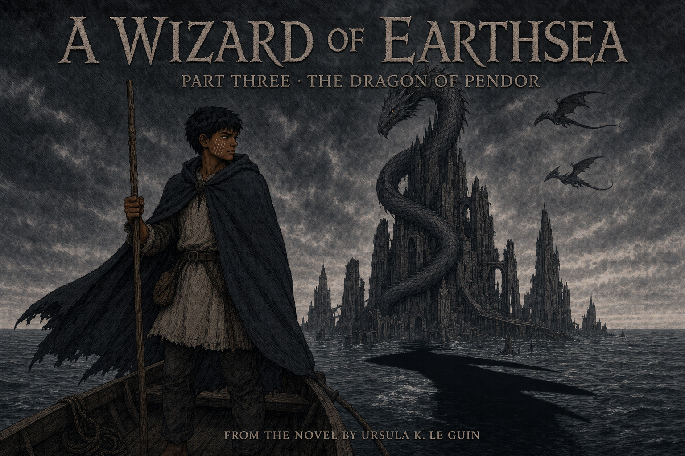

The Dragon of Pendor
Ged came to Low Torning hoping to serve quietly. When he followed a dying child too far, the shadow found him and turned his refuge into a danger for everyone around him. Before fleeing, he answered the older fear he had accepted as his charge. At Pendor he won not by taking the dragon's offer, but by spending his one advantage on the people who trusted him.
What Did Duty Require?
1. Why does Ged follow Ioeth when he already knows the child is dying?
Yes. Compassion matters, but so does pride: Ged cannot bear to give his friend the answer that nothing can be done.
Ioeth is not trapped by the witch or the shadow. Ged follows because Pechvarry trusts him and because he has not yet learned to accept every limit.
2. Why is Hoeg's simple act of staying beside Ged important?
Yes. Hoeg performs no wonder. Its instinctive care reconnects Ged to the living world.
Hoeg casts no spell and cannot dismiss the shadow. Its importance is the wisdom of simply remaining with a hurt companion.
3. Why can Ged not simply flee Low Torning once the shadow finds him?
Yes. Ged must move his private danger away, but first he owes the islanders the protection he accepted.
Ged is free to leave and has a seaworthy boat. What holds him is the duty he chose, not a law or a physical barrier.
4. Why does Yevaud's offer tempt Ged more than treasure?
Yes. Yevaud offers the answer to Ged's mortal problem, which is why accepting it would surrender the bargain.
The offer is not about Roke or transformation. It promises mastery over the hunter Ged cannot yet name.
5. Why does Ged spend his advantage on an oath protecting the islands instead of saving himself?
Yes. Ged uses knowledge for service rather than glory or escape—the lesson Part Two left him carrying west.
No rescue is waiting, and Yevaud does offer the shadow's name. Ged refuses because the bargain must protect the people who trusted him.